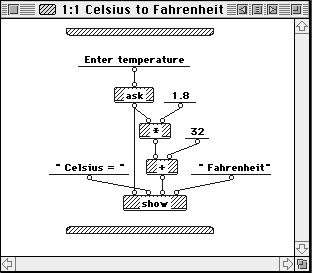
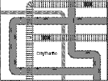
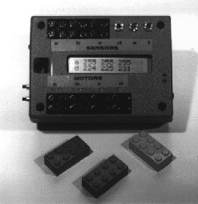
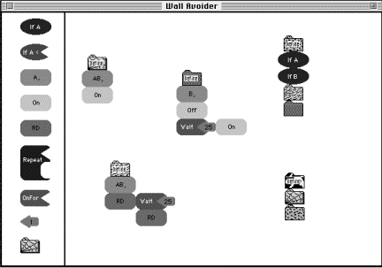

LogoBlocks:
A Graphical Programming Language for Interacting with the World
by Andrew Begel
AUP Advisor: Mitchel Resnick
Epistemology and Learning Group
MIT Media Laboratory
May 24, 1996
LogoBlocks:
A Graphical Programming Language for Interacting with the World
by Andrew Begel
May 24, 1996
Abstract
LogoBlocks is a graphical programming language for the Programmable Brick, developed at the Epistemology and Learning Group in the MIT Media Lab. The Programmable Brick is a small handheld computer that a person can attach to a LEGO creation to control motors and read inputs from sensors. LogoBlocks is intended to be an alternative language to BrickLogo, which is a variant of Logo developed for use with the Programmable Brick. Graphical programming has some significant advantages over textual programming especially in providing visual cues for younger programmers. LogoBlocks attempts to concretize some of these ideas and make the process of building active LEGO creations easier and more intuitive for young children.
AUP Advisor: Mitchel Resnick
Table of Contents
1. Introduction..................................................................................... 5
2. Background..................................................................................... 6
2.1 Visual Programming..................................................................... 6
2.1.1 Background......................................................................... 6
2.1.2 Advantages.......................................................................... 8
2.1.3 Disadvantages....................................................................... 8
2.1.4 Conclusion.......................................................................... 9
2.2 Logo........................................................................................ 9
2.3 LEGO/Logo.............................................................................. 10
2.3.1 Computer in Brick................................................................ 10
2.3.2 Motors, Sensors................................................................... 11
2.3.3 LEGO Robots..................................................................... 11
2.3.4 BrickLogo.......................................................................... 11
3. LogoBlocks.................................................................................... 12
3.1 Graphical Brick Logo................................................................... 12
3.1.1 Sample Program................................................................... 12
3.2 Blocks.................................................................................... 13
3.2.1 Action Blocks...................................................................... 14
3.2.2 Sensor Blocks..................................................................... 14
3.2.3 Variable Blocks.................................................................... 15
3.2.4 Procedure Blocks................................................................. 15
3.3 Interpretation............................................................................. 16
3.3.1 Cluster Analysis................................................................... 16
3.3.2 Form and Parse Spanning Tree.................................................. 16
3.3.3 Logo -> P-Code................................................................... 17
3.3.4 Download to Brick................................................................ 18
4. Discussion..................................................................................... 19
4.1 Implementation.......................................................................... 19
4.2 History................................................................................... 19
4.3 Visual Cues.............................................................................. 19
4.3.1 Key in Lock........................................................................ 19
4.3.2 Snap Into Place.................................................................... 19
4.3.3 Program Flow..................................................................... 20
4.3.4 Multiple Pages..................................................................... 20
5. Conclusion..................................................................................... 21
5.1 Fun and Simple.......................................................................... 21
5.2 Expressive............................................................................... 21
5.3 Functionality............................................................................. 21
5.4 Future Directions........................................................................ 21
5.4.1 Encapsulation...................................................................... 21
5.4.2 Shapes and Textures.............................................................. 21
5.4.3 Function Arguments and Return Values........................................ 22
5.4.4 Branching Program Flow........................................................ 22
5.4.5 Computer Simulation of Brick................................................... 22
List of Figures
Figure 1: Prograph Program to Convert Celsius to Fahrenheit................................. 7
Figure 2: Agentsheets Traffic Simulation.......................................................... 8
Figure 3: Programmable Brick.................................................................... 11
Figure 4: LogoBlocks Program: Wall Avoider.................................................. 13
LogoBlocks is a graphical programming language intended for use with the Programmable Brick developed at the Epistemology and Learning Group in the MIT Media Lab. The Programmable Brick is a small handheld computer that can control up to four motors and can read values from six sensors. Children can make LEGO creations like cars and robots, attach motors and sensors to them, and program the Programmable Brick to actuate and control their creation.
The programming language typically used for the Programmable Brick (hereafter known as the Brick) is a variant of Logo called BrickLogo. This language was developed as an extension to Logo. It added primitives to the language to control motors and read sensor values. There is also a version of C (Interactive C) that was developed for the Brick.
LogoBlocks is a graphical variant of BrickLogo. Instead of writing a textual program with its syntactical constructs, children can push blocks which represent pieces of a program around the screen. The goals of this project are manyfold. Is programming easier with LogoBlocks? Can the graphical language support normal idioms for robot control? Are there any idioms that might be better expressed graphically? Is it more fun for kids to program graphically? Can younger kids program with LogoBlocks if they couldn’t program in BrickLogo? Is the learning curve shallower for LogoBlocks than BrickLogo? Is the ceiling as high? Is programming made more concrete or more abstract using graphical blocks instead of blocks of text?
“Visual programming is commonly defined as the use of visual expressions (such as graphics, drawings, animation or icons) in the process of programming. These visual expressions may be used in programming environments as graphical interfaces for textual programming languages;” they may be used to form new wholly graphical program syntax’s; “or they may be used in graphical presentations of the behavior or structure of a program.”[1]
Some graphical languages represent the instruction flow in a program, others represent the flow of data through a system. There are many different types of visual languages, ranging from those that just try to implement simple action and response systems to full fledged implementations of Turing complete languages that include modern programming techniques such as abstraction and object orientation.
Instruction flow languages show the path of execution of the program pictorially. Most often this takes the form of a flow chart. There is active research going on in this field to incorporate parallel and concurrent programming paradigms into visual programming. [2]
Data flow languages model programming using functions as filters for data objects. An good example of this is found in Prograph, a popular visual language for the Macintosh produced by Pictorius, Inc. Prograph includes object encapsulation and functional encapsulation and provides a robust interface to the underlying operating system. [3]

Figure 1: Prograph Program to Convert Celsius to Fahrenheit
Programming by example [or "programming by demonstration"] is a technique for teaching the computer new behavior by demonstrating actions on concrete examples. The system records user actions and generalizes a program that can be used in new examples. A good example of programming by example is the Mondrian software by Henry Lieberman of the MIT Media Lab.[4] Mondrian is a graphical system that you can teach how to manipulate graphical images. You show the system what to do and it can generalize rules on what to do in different situations.
Graphical rewrite rules are used in a number of projects, including Apple’s KidSim[5] and Alex Repenning’s work on Agentsheets[6] at the University of Colorado. Graphical rewrite rules are a way to specify state transitions graphically. In Agentsheets, for example, if you wanted a car to drive on a road, you would draw two pictures. The first one would be a road with a car on the left side; the second picture would be the road with the car on the right side. Then you link the two with a transition. When you apply the rule, the car would drive along the road until the end.

Figure 2: Agentsheets Traffic Simulation
Graphical programming has its advantages and disadvantages vs. textual programming. Using graphical representations of objects, you can more concretely show object orientation (double click on an object suitcase and see what is inside), eliminate annoying syntax (like {}’s and ()’s in C, BEGIN and END’s and ()’s in Pascal, and ()’s in Lisp) and better visualize the pathways that your program is following. Parallelism can also be made more explicit; all of the different program clusters on your screen can run at the same time.
Graphical programming can also use metaphors from real life to make programming easier. For example, programming a light switch to turn on and off by setting a time on a clock is very intuitive. Graphical programming also allows for easy sharing of programs. You can define your program to be a particular block and just “give” the block to a friend to try in his program. This is similar to the proposed benefits of OOP design in textual languages. Another advantage is easy browsability. Looking at a picture of a program, a user might more easily be able to discern its meaning, rather than looking at a large textual program that is composed of many code files.
Perhaps one of the best advantages is the use of visual cues in graphical languages. Connections between objects can be made more explicit through the design and graphical representation of the constructs. Procedures that take parameters might have holes drilled into them that the parameters are the right shape to fill.
On the other hand, there are also disadvantages. Some graphical languages are graphical to the core, which leads to frustration for sophisticated programmers who want to concisely express a statement that might be better represented using text. Screen real estate is also a limiting factor. This is called the “Deutsch Limit.” “The problem with visual programming is that you can't have more than 50 visual primitives on the screen at the same time.” Deutsch originally said something like “Well, this is all fine and well, but the problem with visual programming languages is that you can't have more than 50 visual primitives on the screen at the same time. How are you going to write an operating system?” [7]
In order for icons and graphics to be understandable they need to be big enough to see or have a textual label. Some languages also depict function calls by lines between clusters of graphics. If there are too many functions on a “page,” the code becomes messy and hard to follow.
Another problem is language extendibility. C and Lisp were built to be extended by the enterprising programmer. At this time, graphical languages tend to be limited to the author’s design without thought for adding additional features.
Despite all of the negatives associated with visual programming, there is a definite appeal for kids. Children like to manipulate blocks and put together collections of objects. Often a major stumbling block to teaching kids to program is that they find the syntax overwhelming. Since graphical program tends to eliminate syntax problems, kids will find it easier to get a program running. There are also many interesting projects that can be made using very short programs. A simple graphical language could reduce the threshold needed for a child to make something fun. When the child gets older and more technologically savvy, he can migrate to textual languages and use their greater complexity.
Logo is a computer language that was invented by Seymour Papert and colleagues in the 1960’s. Papert’s research involved children and learning. How do children learn? How can they learn better? His ideas on the subject are contained within his theory of constructionism, derived from Piaget’s constructivist theories. In constructionism, Papert argues that children, and people, can learn better by doing and by creating. By making something, the person is employing “active” learning, as opposed to listening to a lecture and “passively” learning something. In building something, a person is engaged with his creation. He has put in his time to make the object and he owns it. Another benefit of this style of learning is that the person doesn’t just learn when they are being taught. Since they have built something, they can take time afterward to look at the product and reflect upon it. What makes it work? What could be improved?
Logo was invented to bring the complex world of computer programming to children. It is based on Lisp, but changes it by removing most of the syntax from the language. There are no parentheses, and functions take constant number of arguments. Variables are referred to by their quoted name, and referenced by preceding the name with a colon. Procedures are defined by the construct:
to do-everything :inputa :inputb :inputc
do-this :inputa
do-that :inputb
output do-the-other-thing :inputc
end
Logo’s popularity increased a lot when Papert invented the Logo Turtle. One of Papert’s fondest memories is when he realized that the gears he had played with as a child were a concrete way in which he could solve fraction problems. For Logo, this concrete proxy would be the turtle.
By imagining themselves as the turtle, children can learn a new type of programming style and a new type of mathematical style that they would often miss in a typical school lesson. For instance, if you ask a child how many degrees are in a triangle, he would say 180, of course. If you sit the child down at the computer and ask him to draw a triangle with the Logo Turtle, he’ll immediately think, repeat 3 [fd 50 rt 60], because if you repeat rt 60, 3 times, you get 180 degrees. When the child runs this, however, he finds that the turtle has not made a triangle, but instead made an arc with three segments. The child was never taught to consider that 60 was an interior angle of the triangle, but when you draw a triangle, you need to draw the exterior angles of 120. Once the child realizes this, drawing the triangle, or any other polygon becomes simple.
Before the Logo Turtle existed as a computer object, it was actually built as a hardware robot. Several years ago, the Epistemology and Learning group[8] invented LEGO/Logo.[9] This is a merging of the LEGO construction set[10] with the programming ideas found in Logo. When a child builds a creation out of LEGO, he can then animate it and have it interact with the world via sensors and motors.
The first version of LEGO/Logo was a control box that connected to a computer via serial line. The user could program his motors and sensors in Logo, connect his robots up to the control box and press return. His car or merry-go-round would start to move. One problem with this, however, was that the robot was tethered to the computer. It could not move very far away. The Programmable Brick was created to address this problem.
The Programmable Brick is an 8-bit computer controlled by a 68HC11 processor embedded in a LEGOized box.[11] It has four motor ports, (a b c d) and six sensor ports (a b c d e f). It also has a 2-line LCD screen, two push buttons, and a menu-dial. For communication and power, there is an RJ11 plug and IR-in and IR-out.

Figure 3: Programmable Brick
The Programmable Brick can support four LEGO 9V motors. These can be used to actuate wheels through a gear box or be translated into linear motion via worm gear. There is also support for three servos which have much more torque than motors, but only move through a limited arc.
There are a few different types of sensors available for the Brick. There are digital sensors, such as switches, sound sensors, break-beam sensors and “people” detectors. There are also a large variety of analog sensors, such as light sensors, temperature sensors, pressure sensors, sound volume sensors and IR detectors.
Programmable Bricks have been used to make cars, robot walkers, sculptures, amusement park rides and many other things. Since LEGOs are so versatile, you can make most anything. Once you add in the Programmable Brick, the possibilities just open up. One current project involves using the Brick to play music for LEGO musical instruments. Another popular use is in the 6.270 contest at MIT, where students have one month to build a robot that will compete in a contest at the end of the course.[12]
BrickLogo is an extension to the Logo language that adds in primitives to control motors and sensors. Some of these include,
a, on (talk to motor a and then turn it on)
b, rd (talk to motor b and reverse its direction)
onfor <time period> (turns on a motor for a certain time period)
repeat 4 [onfor 5 wait 5] (repeat 4 times, turn on motor for 5/10ths of a second and then wait 5/10ths of a second.)
Here is a program to make a car follow a wall by checking that its left wall sensor is pushed. If it ever gets unpushed, it should turn back toward the wall.
to follow-wall (this defines a Logo procedure called follow-
wall)
ab, on (turn on motors a and b)
if not sensora [b, off wait 5] (if sensora is not on, turn off motor b
for 0.5 seconds)
follow-wall (recurse and call follow-wall again)
end
LogoBlocks is an environment that makes programming the Programmable Brick easier and more appealing to kids. LogoBlocks has a low threshold for learning, and eventually will have a high ceiling for the projects you can program with it. By manipulating colored blocks of different shapes and sizes, a child might create a program that controls his Lego car to move forward until it bumps into a wall, and then move backwards. It might control a light follower--a car that looks for light and turns in that direction.
LogoBlocks is a cross between visual programming and Brick Logo. Users can pull blocks from a palette on the left side of the screen over onto the main work area. Each block is a different color and a different shape. The user can make his program and then download it via serial line to the Programmable Brick.
Here is a simple program in LogoBlocks involving several procedures. It controls a LEGO car with two front touch sensors to move forward until it hits a wall and then to back up for 2.5 seconds, turn for 2.5 seconds and then resume forward operation until it hits a wall again.

Figure 4: LogoBlocks Program: Wall Avoider
The LogoBlocks palette is on the left side of the screen. From there, several blocks were dragged onto the main working area and formed into clusters. The top left cluster is headed by a define Spider block (note the spider-like texture on the block), and followed by an AB, block and then On. This defines a procedure called Spider which turns on motors A and B and then returns.
The second procedure is in the middle. It is headed by a define Snake block, and followed by a B, block, then Off Wait 25 On. This defines a procedure called Snake which turns off motor B for 2.5 seconds and then turns it back on.
The third procedure is defined on the lower left. It is headed by a define Elephant block, and followed by an AB, RD Wait 2.5 RD. This defines a procedure called Elephant which tells motors A and B to reverse direction for 2.5 seconds and then reverse back to their original motion.
The fourth procedure is on the top right. It is headed by a define Cheetah block, and followed by If A If B then [Elephant Snake]. This defines a procedure called Cheetah that when run will check to see if Sensor A is pushed, then Sensor B is pushed and then run the Elephant procedure, then run the Snake procedure. This procedure causes the LEGO car to roll backward for 2.5 seconds and then turn right for 2.5 seconds (by leaving motor A on and turning B off.) Then it resumes normal forward motion. Since Cheetah’s first statement is a sensor block, it is called with a when, instead of a waituntil. The difference is that when runs forever, while waituntil only runs once. When Cheetah is finished, it will automatically restart.
The last procedure is called Cow. It is headed by a define Cow block and followed by a call to Spider and a call to Cheetah. This function, when run, will turn on the two motors and start the LEGO car forward, and then run Cheetah to check if it collided with a wall and back up and turn away from it.
LogoBlocks would need several different types of blocks. There would be action blocks, sensor blocks and variable blocks. Action blocks could control motors and “do” operations like wait and repeat. Sensor blocks would implicitly combine if statements with sensor readings (i.e. if sensora < 45 [onfor 5]), Variable blocks would enable users to plug in numbers to functions that required them, like onfor and wait and repeat. (show pictures of blocks with each heading) All of the blocks are identified by a unique shape and a text description that is drawn inside each one. Since there are many different primitives to be represented but limited palette space, the user only sees nine blocks from which to choose. Each block has several predefined meanings that the user can select. After he has dragged a block onto the workspace, he may press control or option and click on the block to cycle through these different definitions. Sensor blocks, action blocks, one-input action blocks, variable blocks and procedure blocks respond to control-click. Analog sensor blocks, variable blocks and procedure blocks also respond to option-click for an orthogonal definition cycle. Two-input action blocks (of which repeat is the only one) don’t respond to control or option click.
Action blocks are the primary actuator in LogoBlocks. These would include a motor selection block (a, b, c, d, ab, bc, cd, abc, bcd, abcd,), a motor control block (on off), several motor direction blocks (rd thisway thatway), several timer blocks (for program flow control) (wait onfor), and a repeat block (repeat). Action blocks are roughly rectangular, but have rounded edges.
There are several different action blocks that take no inputs. These include the motor selection block, the motor control block and the motor direction block. To control a motor on the Brick, you must first address it, or talk to it. In BrickLogo this is done with the command a, or b, or ab, which would talk to motor A, motor B or both motor A and motor B, respectively. After you designate a motor, you can then turn it on or off using the On/Off block. (Foo/Bar/Moo is the convention I will use to show the different definitions a block has. To switch among the meanings, the user would control-click on the block.) Once the motor is on, you can change its direction with the thisway/thatway/rd block. Thisway and thatway are the two directions that a motor can spin on the Brick. (you might ask, why thisway and thatway and not forward and backward? Forward and backward have too much meaning as specific directions. Depending on how the motor is placed in the Lego creation, when you say forward, the creation might actually move backward). rd reverses the motor’s direction. To switch among the meanings on action blocks, control-click on the block.
There are also program control blocks which take one variable block as input. The Onfor/Wait block is the only one-input action block in LogoBlocks. Onfor <value/10> turns on the current motor for <value/10> seconds. Wait <value/10> will pause the execution of a program for <value/10> seconds. You can get the same program from Onfor 5 as with On Wait 5 Off.
There are also action blocks that take two inputs. Repeat blocks are the only instance of these in LogoBlocks. Repeat blocks take a variable block and an action/sensor/procedure block as input. Repeat implements the Logo command repeat <numoftimes> <list-to-run>. Repeat will execute a sequence of blocks <numoftimes> times. This way you can make loops to continually do an action over and over again. By plugging in a variable block into the top-right of the repeat block, you specify <numoftimes>. Putting another block in the bottom-right of repeat specifies the beginning of the block of code that it will run. Normal parsing rules hold in the repeat <list-to-run>. (Parsing rules will be explained in a later section.)
Sensors on the Brick are the primary way of getting real-world information to your program. There are two types of sensors, digital and analog. Digital sensors are either on or off. (i.e. push buttons, sound sensors, break-beam sensors, etc...) Analog sensors, on the other hand, can have values from 0 to 255. (i.e. light sensors, sound sensors, bend sensors, heat sensors, etc...) Sensor blocks are oval in shape.
Sensor blocks are used for program control in LogoBlocks. They would correspond to the when and the waituntil statements in BrickLogo. If the sensor block comes at the head of a cluster of blocks or is the first block in a procedure it is interpreted as a when. If it comes in the middle, it is interpreted as a waituntil. When runs the cluster of blocks forever, whenever the predicate is true. Waituntil waits until the predicate is true, but only runs the cluster once. If we want a program to wait until some sensor value matches some predicate, we would use a sensor block.
Digital sensors have two constructs: ifSensorA, and ifnotSensorA. This allows you do control your program based on a push button. When your program hits a digital sensor block it will wait until the sensor is activated. (i.e. If the button is pushed, do the next program block sequence.) If you use ifnotSensorA, your program will wait until the button becomes unpressed and then do the next program block sequence. Since there are three digital sensor ports on the Brick, the digital sensor representation is ifSensorA/ifSensorB/ifSensorC/ifnotSensorA/ifnotSensorB/ifnotSensorC.
Analog sensors have more constructs. They can be if SensorA < <number>, if SensorA > <number>, or if SensorA = <number>, where <number> is a variable block. Since the analog sensor values fluctuate over time, each command will wait until the specified condition is true and then continue with the execution of the blocks. The user may cycle among sensors A, B, C, D, E and F by control-clicking the sensor block. By option-clicking the block, he can change whether the block responds to >, < or =.
Number blocks are the only variable blocks in LogoBlocks. Numbers are shaped like cartoonish arrows. Whenever some action block or sensor block needs a number as input, the number block will do the job.
Numbers can be modified to change from 0 to 255 by pressing control and clicking the mouse. You change the number in increments of ten by option-clicking the block. When used with a repeat block or a sensor block, the number is interpreted literally, but when used with a timer block (onfor/wait) the number is interpreted as tenths of a second. (So the longest interval of time to wait with one wait block is 25.5 seconds)
In order to implement procedural abstraction, procedure blocks are used. They are in the shape of folders with animal textures. By holding down control and clicking the mouse, you can cycle through seven different animal shapes. Procedures are named by seven different animal names. The procedure block’s representation in LogoBlocks is Spider/Snake/Elephant/Cow/Cheetah/Zebra/Camel.
If you want to define a new procedure, you option-click on the procedure block to turn it into a define block. Then you place it at the top of the cluster you want to define. The rest of the cluster is “called” by that procedure block. If a procedure block without turning it into a define block, it performs a function call to the procedure defined by that animal texture. LogoBlocks optimizes tail recursion calls. If the procedure object is the last block in a cluster, it will consider the block a “goto” instead of a procedure call. This lets you program infinite loops.
The Brick has seven menu items that are presented upon turning it on. The user can select among these with a knob and press a button to run them. When the user downloads their LogoBlocks program to the Brick, each procedure that was defined will show up as an item in the menu. So if I had defined Cheetah and Zebra, menu items one and two on the Brick would say Cheetah and Zebra.
A typical program in LogoBlocks would consist of several blocks attached to each other to form a sort of cluster. How is a particular block identified to be in a particular cluster? How is this cluster identified as separate from other clusters? Once the cluster has been determined, how does one parse it?
The technique used in LogoBlocks to determine which blocks belong in a cluster is the brute-force algorithm. The bounding region for each block is expanded outwards by two or three pixels. If it intersects any other block’s region, then it is considered to be touching that block. The block that it is touching and the direction from the center of the first block is noted in a list. This is then repeated for each block in the list of touching-blocks. When there are no more blocks found touching that have not already been explored, the cluster is finished and returned. The cluster is a list of blocks, where each block has a list of all of the blocks that touch it and their directions from the center of the block.
Once the cluster is determined, the top-left block in the cluster is chosen. Parsing proceeds from top-left to bottom-right, where precedence is given to the block on the right. Each type of block has a different method for parsing.
· An action block will look for a block on its right, and recurse on that block, then look for a block under it, and recurse on that block. Then it returns its own action followed by the result of the right block then the result of the bottom block.
· An one-input action block will look for a number variable on its right. If one is not there, an error is signaled. If one is there, it notes the number on the block, and then recurses on the number block. Then it recurses on the block underneath it. It finally returns its own command followed by the number, and then the result from the number block recursion followed by the bottom block recursion.
· The repeat block (the only instance of a two-input action block) will look to its top right for a number block. If it does not find one an error is signaled. Then it records the number, but does not recurse on the number block (this is due to space considerations on-screen. There is not enough room to put a block on the right of the number block and not have it touch the block in the list-to-run slot of the repeat block.) It then looks for a block in its bottom right slot, and recurses on that. If one is not found, an error is signaled. Then it looks for a block underneath it and recurses on that. It finally returns a form (repeat <num> <list-to-run>) <rest-of-code>.
· A digital sensor looks to its right for a block and recurses on that. It then looks underneath for a block and recurses on that block. It then returns its own definition (ifA or ifnotA, etc...) and then the result from the right recursion and then the result from the bottom recursion.
· An analog sensor looks to its right for a number block. If it doesn’t find one, an error is signaled. It records the number and then recurses on the number block. It also recurses on the block underneath it, if any. Finally it returns itself (ifA< or ifB>, etc...) the number, then the result from the number block recursion and the result from the bottom block recursion.
· A number block merely looks to its right for another block and if it finds one it recurses on it and returns the result from that.
· A procedure block recurses on the blocks to the right and bottom. If it is a define block, it returns define, then the animal texture name, and then the result of the right then bottom recursions. If it is not a define block, it does the same but omits the define at the beginning.
Once the graphics have been parsed, the result is something that looks very much like BrickLogo code. This is run through a compiler that translates this code into postfix code that the Brick can understand. Each command has been parsed into its own list for ease of compiling.
The compiler starts at the beginning of the Logo expression and sees if the first element is a define. If it is, then it will create a new procedure object with the define’s name. If the first block, not counting the define block, is a sensor, then a when form is used to define the sensor. When is a BrickLogo function that launches a thread to loop, waiting for the sensor predicate to return true and run the function. When the function has finished running, the loop will start over again.
Most other commands are checked for proper numbers of arguments and are converted into postfix form. Numbers are converted into a low-byte and high-byte form (since numbers are 16 bits and serial transmission is an 8-bit protocol). If a sensor is found inside a Logo expression, and not at the top, it is translated into a waituntil form.
If a define comes in the middle of a procedure, an error is signaled. If a procedure is called from the end of another function, a tail recursion function call is used instead of the normal stack based function call. If a procedure is defined twice by two different clusters, the one that is defined last will win. In order that the Brick doesn’t crash if an undefined function that is called, null definitions will be generated for any undefined procedures at download time.
The resulting postfix P-Code is then downloaded to the Brick. The Brick has seven menu items that reside in a particular memory address. The downloader sends the names of the procedures and the pointers to their addresses to the menu memory. It then downloads the rest of the code to the data memory of the Brick. The Brick is then reset, and the menu is shown. If no procedures had been defined, then the last expression downloaded would be run.
LogoBlocks was created in Macintosh Common Lisp 2.0.1, produced by Digitool, Inc.[13] This was a natural choice due to two reasons. The first is that Logo is a dialect of Lisp, therefore it is a straightforward process to make a compiler for Logo. The second is that I have been programming in Lisp since I took 6.001, and find it very easy to prototype a project like this very quickly.
The project went through a few different revisions. It was started by Albert Castillo in May 1995 for his Course VI AUP. He implemented a simple proof-of-concept system where all of the blocks had a rectangular shape (all the same size) and they would snap to a constant grid. Functions that took arguments were special cased to include a number inside the text for the block. Blocks were interpreted from the top down and could not be placed next to each other. Blocks were selected from a palette on a separate window. To move a block from the palette to the workspace you would click on the object in the palette and click on the place in the workspace that you wanted it to go.
I decided to reimplement LogoBlocks from scratch during the summer of 1995. I removed the size and shape constraint on the blocks and added a snap-to feature to make the blocks fit together. (to be discussed in next section). I also added specific blocks for variables and made a plug-in style architecture for putting blocks together. I also added drag-and-drop capabilities from the palette bar to the workspace. To add a block now, you drag it off the palette and onto the workspace. Another addition was to used double-buffered graphics for object dragging because it was a more concrete representation of what the user was actually doing when moving the blocks. I also added the ability to select several blocks and move them in tandem. Another addition was the ability to parse in a 2-dimensional way instead of just down or across. The parser will follow the blocks across and down in any particular configuration.
In order to make function arguments more apparent to the user, any block that requires a variable has a cutout in the shape of the variable that will fit there. In this version of LogoBlocks there are only number variables, which are shaped like arrows. Every block that requires a number has an arrowhead cutout where the arrow fits in. The repeat block is special and has a cutout in the shape of an action block, which starts its <list-to-run>. Other objects may be put here, such as a sensor block or a procedure block, but the point is that a large block must fit in the space. This type of visual cue for variable insertion is nice compared to a textual language where the presence of a function name does not necessarily imply that it requires any arguments at all.
In removing the grid from the first version of LogoBlocks, it was noted that some form of snap-to behavior was desired. Using a two-dimensional table, every type of block was taught how to snap-to each other type of block based on its proximity and location. A number variable near the right side of an action block with a number input would snap into place. Two action blocks brought near each other would snap next to and align themselves with each other. If an object didn’t belong, such as a number object next to a action block with no inputs, it would just sit there and not move. In this way it was possible to see a very good cue for where certain blocks “were willing” to be placed.
Seeing a program laid out in multiple colored blocks is very nice way to see instruction flow. Another advantage to the visual layout is that you can envision parallel programming easily. If you have two stacks of blocks next to each other, they can both run at the same time. This is an improvement over textual languages where two parallel threads might be in two totally separate areas of the source file is not readily apparent which code, if any, is currently executing.
The “Deutsch Limit” on screen legibility was a concern in LogoBlocks. To alleviate some pressure, multiple pages were added to the workspace. Blocks would now reside on a particular page, so you could have a page for a particular procedure definition and call the procedure from another page.
One of the goals of LogoBlocks was to make it fun and simple to use. I think that it has achieved these goals. LogoBlocks is colorful and has a nice tangible feel to it which makes the user feel that he is actually manipulating real blocks to put together a program. Graphical programming is definitely going to come into its prime for children’s programming soon.
LogoBlocks also had to be expressive. There would be no use to using LogoBlocks if you could not do anything useful with it. Looking at the sample program in section 3.1.1, you can see that a program that executes a simple wall avoidance algorithm encoded in a few blocks. Many LogoBlocks programs are this small and simple, and can generally do the tasks that the user wishes.
LogoBlocks lacks something in the area of functionality. Users have found it difficult to advance beyond simple programs to enact more complex behaviors. In the next section, I discuss possible directions for LogoBlocks to move in to alleviate some of the problems.
There are two types of encapsulation envisioned for LogoBlocks. The first is procedural abstraction, which was implemented using procedure blocks. Instead of using a special define form to make a function, a procedure block could be a container for a program cluster. Allowing procedures to be embedded inside of an another block would be a syntactically and metaphorically clearer representation for a function. This encapsulation would allow the user to “compress” his program into a representative block which the user could use wherever he wanted. The second form of encapsulation is object encapsulation. This would be used to represent sensors and motors as containers for program clusters that would affect how each one operated.
As my painting and art skills are not high quality, I only added simple shapes to LogoBlocks. One area for improvement would be to have more shapes and different colors and iconic pictures to represent different functions and primitives. Ideally, this idea combined with the object encapsulation could really turn LogoBlocks into something extremely functional. One design issue would be how to maintain the block palette. If there are too many different types of blocks, screen real estate on the palette becomes an issue. Some notion of hierarchy could alleviate this problem. An possible solution is found in Fractal Design Dabbler, where different categories of painting tools are kept in separate drawers on a palette.[14]
LogoBlocks lacks function arguments and return values. Arbitrary user defined functions don’t take arguments. Parameterizing functions adds much desired complexity and generalizability to a computer language. An astute observer would also notice the lack of mathematical operator blocks. This is because no block can currently give an output. One idea for the representation of an output is to have a plug (like in a canister vacuum cleaner) that can be pulled out and plugged into another object as an input. A string would connect the two so the connection would be visible. One problem with this could be many lines cluttering the screen. However, with object encapsulation and proper abstraction, this distraction could be kept to a minimum.
Another missing feature is the ifelse statement from Logo. This would be an obvious win. Right now, a LogoBlocks sensor block will block until the predicate is true. The branching program flow brought upon by an ifelse block could be represented easily. If the predicate is false, follow one set of blocks. If it is true, follow the other.
The last desired feature for LogoBlocks would be a way to simulate the Programmable Brick functionality. This could take the form of a graphic of the Brick with lights representing different motors and pictures of sensors. As your program executes, each block would highlight in turn and its effect on the Brick would be detailed on the picture. This way you could “debug” your program without needing trying it out physically. You could also connect up your Programmable Brick, run your program and have the on-screen picture of the Brick receive real-time feedback from the physical one. An even loftier idea would be to make an electronic version of the Brick’s environment and LEGO creature and have it travel around in a environment created either entirely in software, or as a mix of real-time input (from a video camera, for example) and computer graphics.
[1] McIntyre, David. Burnett, Margaret. Comp.Lang.Visual FAQ. ftp://rtfm.mit.edu/pub/usenet/news.answers/visual-lang/faq. April 22, 1996.
[2] Elliot, Robert C. Visual Concurrent Languages Bibliography. http://cuiwww.unige.ch/eao/www/Visual/Concurrent.VL.biblio.html. December 16, 1990.
[3] Pictorius, Inc. The Home of Visual Object-Oriented Development Environments. http://www.pictorius.com/home.html. May 16, 1996.
[4] Lieberman, Henry. Programming by Example Home Page. http://lieber.www.media.mit.edu/people/lieber/PBE/index.html.
[5] Cypher, Allen. Kidsim. http://www.atg.apple.com/Allen_Cypher/Kidsim.
[6] Repenning, Alex. Agentsheets. http://www.cs.colorado.edu/~l3d/systems/agentsheets.
[7] McIntyre, David. Comp.Lang.Visual FAQ. ftp://rtfm.mit.edu/pub/usenet/news.answers/visual-lang/faq. April 22, 1996.
[8] Epistemology and Learning Group. http://el.www.media.mit.edu/groups/el.
[9] Epistemology and Learning Group. LEGO/LOGO. http://el.www.media.mit.edu/groups/el/projects/legologo
[10] LEGO Group. LEGO Official World Wide Web. http://www.lego.com
[11] Epistemology and Learning Group. Programmable Brick. http://el.www.media.mit.edu/groups/el/projects/programmable-brick.
[12] 6.270 Organizers. The 6.270 LEGO Robot Design Competition. http://www.mit.edu:8001/courses/6.270/home.html.
[13] Digitool, Inc. Digitool, Inc. Home Page. http://www.digitool.com.
[14] Fractal Design Corporation. Fractal Design Dabbler. http://www.fractal.com.